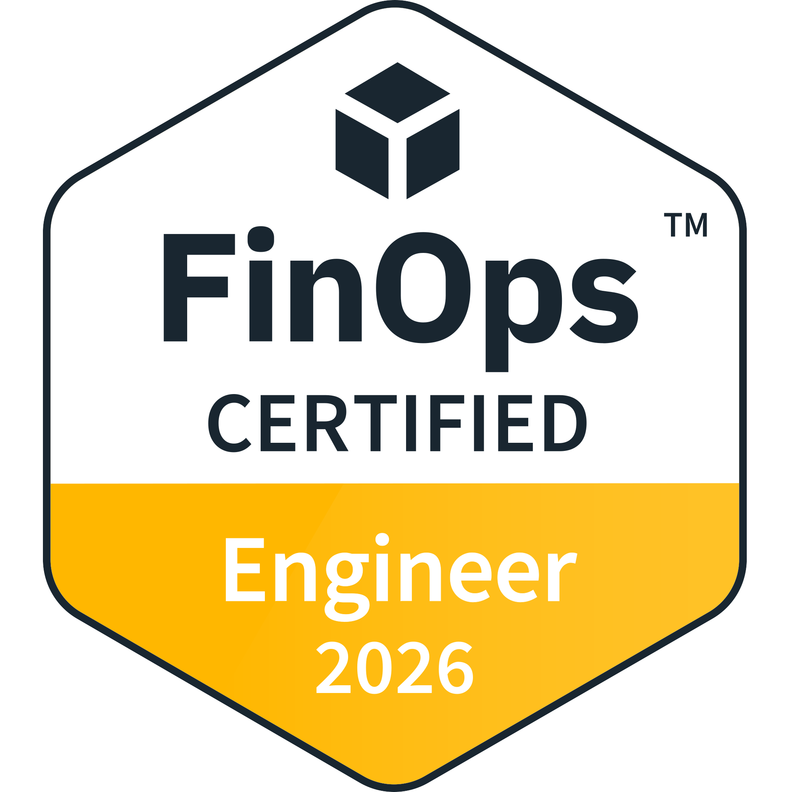
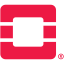
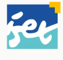
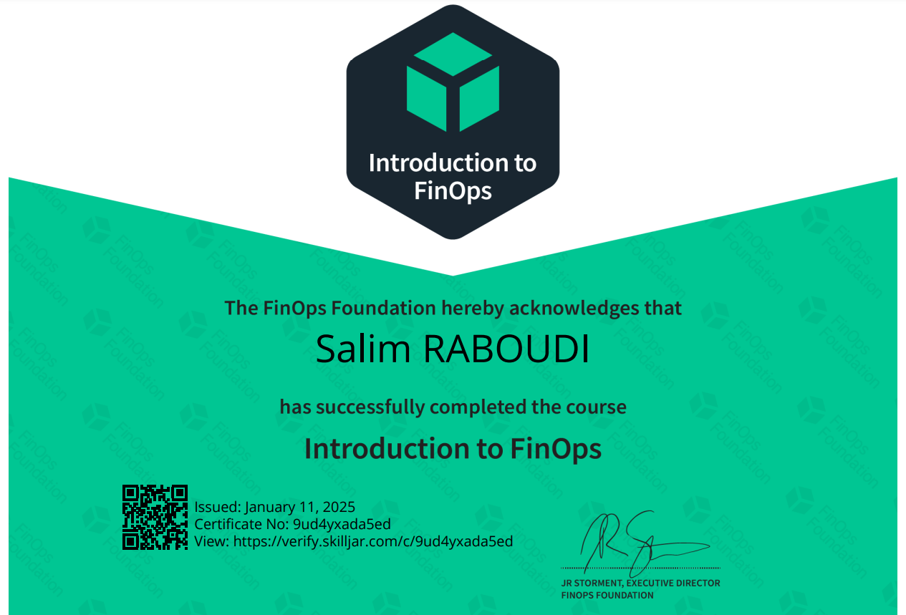
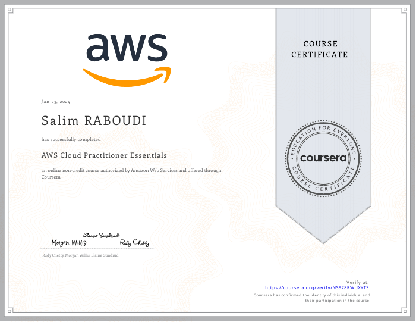
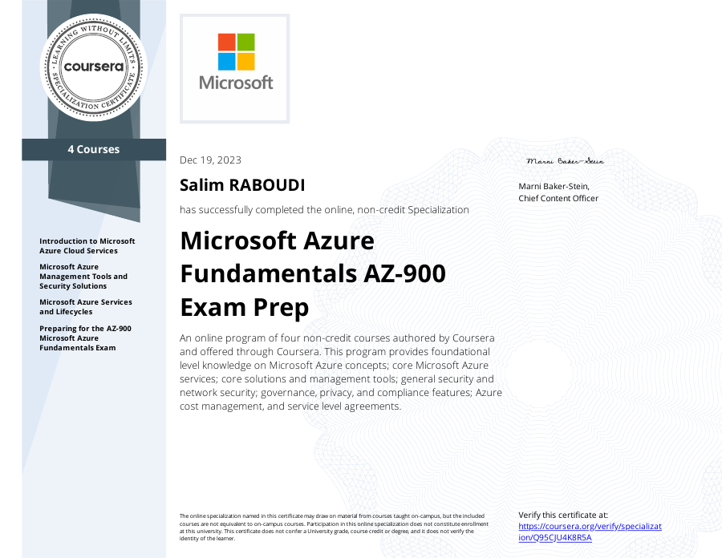

OPEN TO OPPORTUNITIES
Hello, I’m Salim Raboudi.
Cloud &
DevOps
Engineer.
Reliable systems. Smarter automation.
Cloud operations with cost in mind.
BASED IN TUNISIA • OPEN TO THE WORLD

FinOps CertifiedENGINEER · 2026
Build. Automate. Operate.CLOUD & DEVOPS
THE WAY I WORK
Cloud platforms
Build dependable infrastructure across cloud environments.
↗Containers & delivery
Consistent deployments from development to production.
↗Automation & operations
Repeatable pipelines, infrastructure and day-to-day operations.
↗FinOps & governance
Connect usage, visibility and practical cost optimization.
↗A LITTLE ABOUT ME
Engineering with
purpose.
I’m Salim, a Cloud & DevOps Engineer who connects application development, cloud infrastructure and production operations.
With an Engineering Diploma in Cloud Computing from ESPRIT and the FinOps Certified Engineer certification, I focus on reliable delivery, automation, observability, infrastructure security and financially sustainable cloud systems.
Bardo, TunisiaOpen to relocation & remoteArabic · English · French
MY TOOLKIT
From infrastructure
to impact.
Containers & delivery
Infrastructure & automation
FinOps & governance
Observability
Application stack
SELECTED WORK
Ideas built.
Systems delivered.
Cloud, production, mobile and AI.
A closer look at the work behind my CV.
01
USAGE → INSIGHT → OPTIMIZE
Cloud · FinOpsCloud · FinOps
Cloud FinOps Framework
A framework connecting cloud usage, cost visibility and governance.
~10%Lower monthly costs in test environments
Explore the project ↗
- Namespace cost allocation, labels, budgets and alerting.
- Z-Score and Isolation Forest anomaly-detection workflows.
- Approximately 10% lower monthly costs in test environments.
02
CODE → BUILD → SHIP
Production · DevOpsProduction · DevOps
Université Italie Platform
From application delivery to secure day-to-day production operations.
Staging → ProductionAutomated delivery with controlled releases
Explore the project ↗
- Isolated staging and production environments behind Nginx.
- GitHub Actions deployment automation and controlled releases.
- Persistent data, TLS, health checks and secrets management.
03
IDEA → EXPERIENCE
Web · MobileWeb · Mobile
FixEat
A maintenance platform connecting companies and administrators.
One codebaseResponsive web experience and Android delivery
Explore the project ↗
- Role-based access, authentication and client management.
- Requests, image uploads, spare parts and real-time progress.
- Structured maintenance lifecycle, reporting and Android delivery.
04
IDEA → EXPERIENCE
AI · AndroidAI · Android
Amoria AI Planner
Personalized activities for individuals and groups of up to five.
Individual + groupAI-powered activity recommendations for up to five users
Explore the project ↗
- Individual recommendations and shared preference quizzes.
- Firebase Auth, Firestore, Storage and Google Sign-In.
- Locally served Qwen3 through LM Studio with OpenStreetMap / Overpass.
05
COMPUTE + NETWORK + STORAGE
Infrastructure · AcademicInfrastructure · Academic
Private Cloud Infrastructure
A private cloud built from physical PCs through application deployment.
Hardware → ApplicationPhysical infrastructure through to deployed web application

OpenStackKVMExplore the project ↗
- Configured controller, compute, virtualization and networking.
- Benchmarked the environment until stable operation.
- Deployed and exposed a web application on the private cloud.
06
DESIGN → DEPLOY → CONNECT
Web · DeliveryWEB · DELIVERY
Jobs Hunt
A multilingual web platform with responsive design and automated deployment.
EN / FR / ARMobile-friendly delivery for three languages
Explore the project ↗
- Responsive design, mobile optimization and multilingual content delivery.
- Staged deployments over FTP / SSH, tag-based rollback and security scans.
- Deployment runbooks and technical knowledge transfer.
PROFESSIONAL JOURNEY
Experience that
builds on itself.
Jan 2025 — Present
Contract · Bardo, Tunisia · On-site / Remote
Cloud & DevOps Engineer
Université Italie
- Architected and operated an Angular and Spring Boot production platform on an OVHcloud Linux VPS.
- Containerized frontend, backend and database services using Docker Compose for reproducible deployments.
- Implemented GitHub Actions pipelines for builds, tests, image creation and controlled production releases.
- Managed isolated environments, secrets, health checks, database persistence, TLS and Nginx reverse proxying.
Aug — Nov 2024
Freelance, part-time · Riyadh, Saudi Arabia · Remote
DevOps / Front-End Engineer
- Delivered a responsive multilingual EN / FR / AR web platform with mobile and performance optimization.
- Built GitHub Actions pipelines for staged Hostinger deployment over FTP / SSH, tag-based rollback, security scans and operational runbooks.
Feb — Jul 2024
Contract · Lac II, Tunis
Cloud FinOps Engineer
Target Energy Solutions
- Built a GCP FinOps framework combining Billing Export, Cloud Monitoring and GKE namespace metadata.
- Established label policies, namespace cost allocation, showback inputs, budgets and alerts; explored anomaly detection using Z-Score and Isolation Forest.
- Applied resource requests and limits and Active Assist recommendations, reducing test-environment monthly costs by approximately 10%.
- Delivered weekly usage-versus-billed reports, variance explanations, executive dashboards and operational runbooks.
Jul — Aug 2023
Internship · Lac II, Tunis
DevOps Engineer
Target Energy Solutions
- Deployed Kubernetes applications with reusable Helm charts and environment-specific configurations.
- Used dynamic variable injection and Go templates across deployment environments.
- Built GitHub Actions and webhook automation with a pull-based deployment approach.
Jul — Aug 2022
Internship · Lac II, Tunis · On-site
Web Developer
Access Content Agency
- Built responsive React components for a WhatsApp-inspired customer communication feature.
- Improved access to sales and customer support from the company website.
Feb — Jul 2020
Internship · Lac II, Tunis · Hybrid
Web Developer
Ooredoo Tunisia
- Contributed to an Angular and Spring application for deliveries, online orders, inventory and product availability.
- Helped sales teams locate products in the nearest store and improved logistics visibility.
FOUNDATIONS & CONTINUOUS LEARNING
Keep learning.
Keep growing.
Education
2021 — 2024 · ESPRIT
Engineering Diploma in Cloud Computing
Grade: GPA: 18.32/20 (~91.6%, ~3.7/4.0, ECTS A)

2016 — 2020 · ISET Radès
Bachelor’s in Computer Science
Certifications & course certificates

View certificate ↗
View certificate ↗
View certificate ↗2023 · MICROSOFT / COURSERA
Microsoft Azure Fundamentals AZ-900 Exam Prep
Specialization completion · 4 courses
Verify credential ↗CONTINUOUS DEVELOPMENT
Curiosity into
capability.
I make room for one new insight each day, then connect it to practical engineering work.
FinOps in practice
Deepening my understanding of cost visibility, allocation, optimization and governance to make better cloud decisions.
AI systems & architectures
Building knowledge of AI models, how they fit into systems, and emerging architectures through hands-on exploration.
Infrastructure & delivery
Strengthening my understanding of virtual machines, infrastructure design and reliable delivery pipelines.
Monitoring & meaningful metrics
Learning how to select, interpret and use metrics accurately to understand system behavior and support reliable operations.
COMMUNICATION
Languages I work with.
Arabic
Fluent
English
Advanced
French
Advanced
Spanish
Beginner
BEHIND THE WORK
My work, in pictures.
Original work gallery. Click an image to explore.
LET’S CONNECT
Your next challenge.
Let’s talk.
Open to Cloud & DevOps, SRE and Platform Engineering opportunities, relocation and remote collaboration.